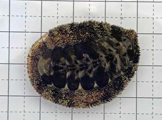
ヒザラガイ膝皿貝
Acanthopleura japonica
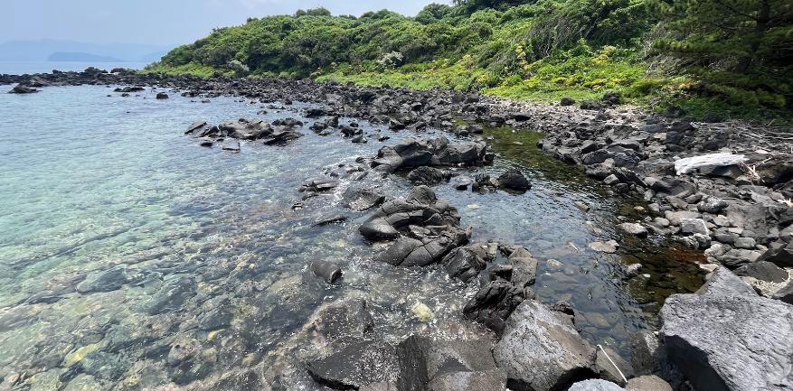
笠山の海岸には溶岩の磯が広がり、そこに生える海そうや貝類をとる漁業がさかんです。しかし、ほかにどんな生き物がいるのかは、実はよくわかっていません。変わり続ける磯の今のようすを調べて記録し、これからの変化を見ていくための土台とします。調査レポート #01 より
虎ヶ崎は、笠山の北側にある岬です。笠山は約1万年前のふん火でできた火山で、溶岩が流れて冷え固まってできています。
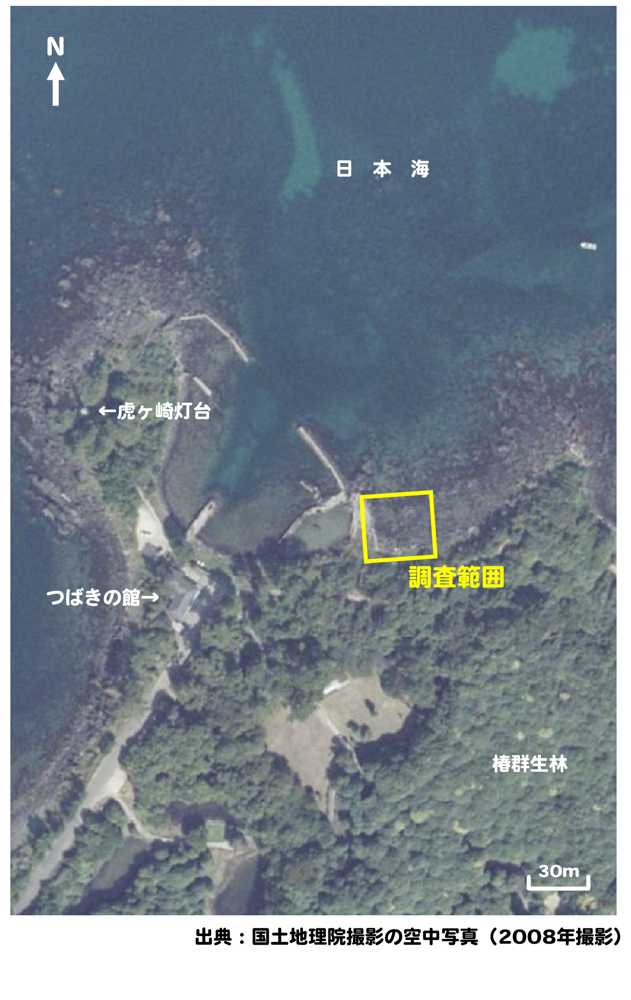
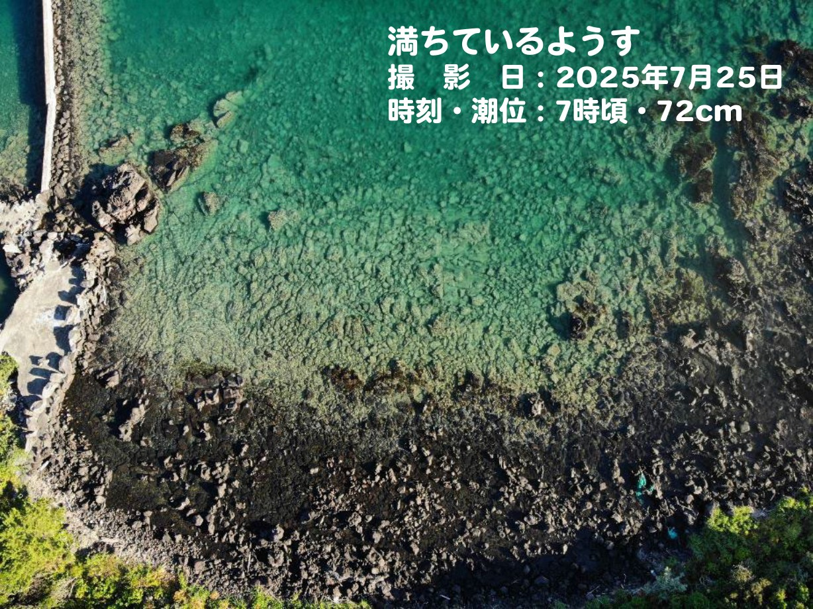
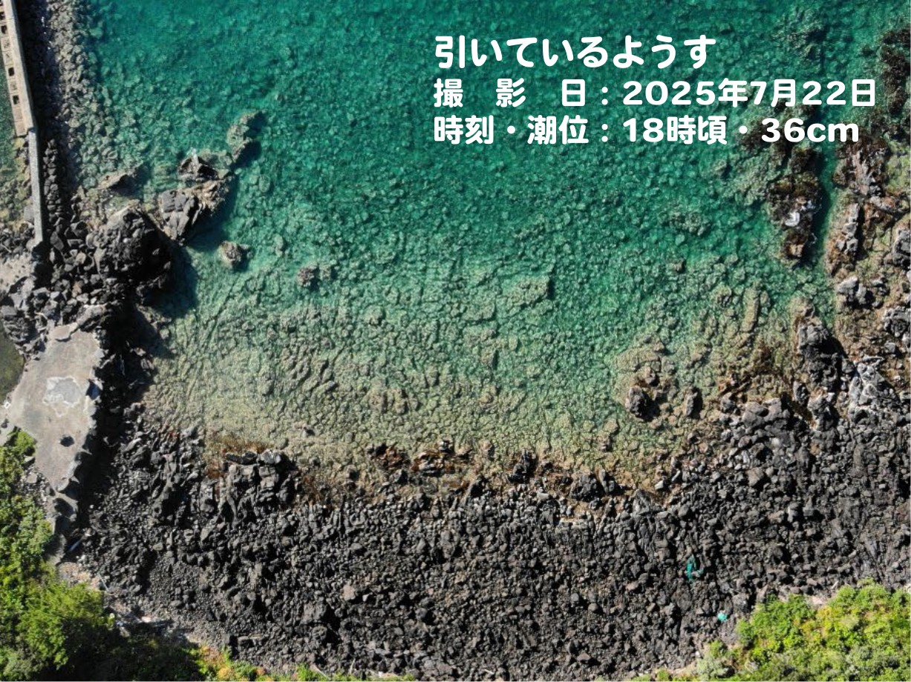
撮影：伊達千絵
陸上から磯のようす（地形や岩石の状態、水位）を観察し、そのようすをもとに3つのゾーンに分けて名づけました。
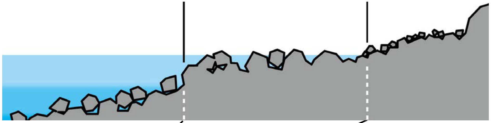
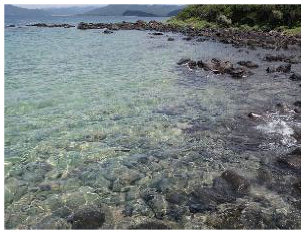
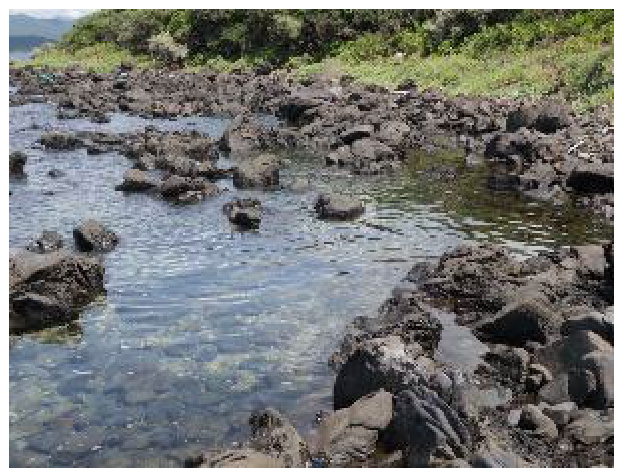
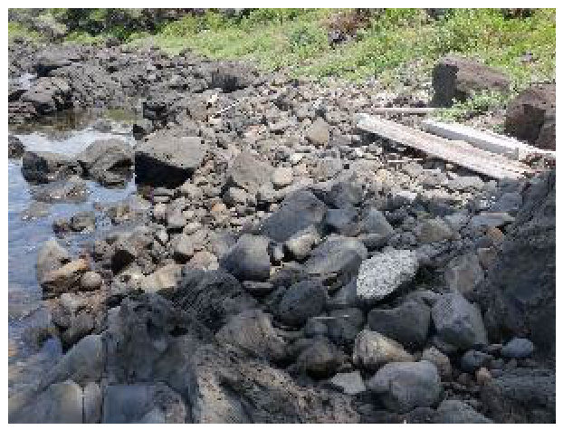
3つのゾーンで生き物を採集して記録しました。第1回は計23種67個体（ゴツゴツ 8種／チャプチャプ 19種／ブクブク 1種）。カードをタップすると、くわしい情報が見られます。

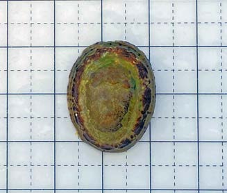
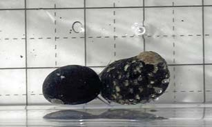
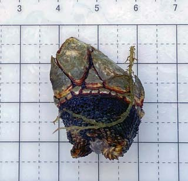
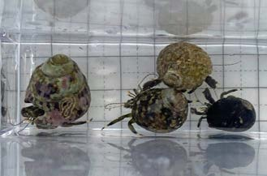
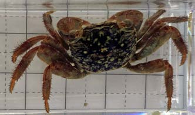
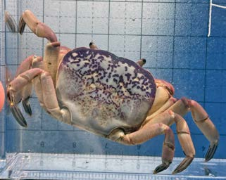
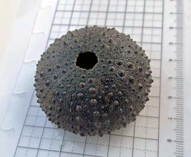
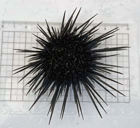
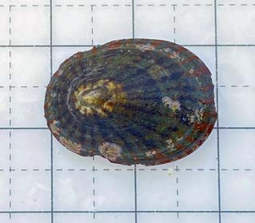
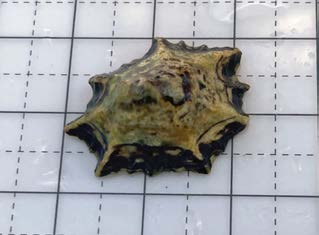
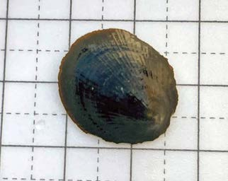
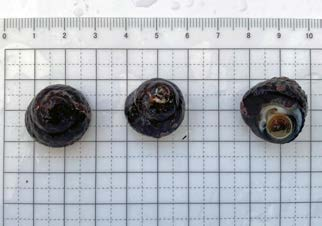
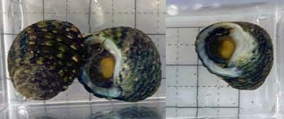
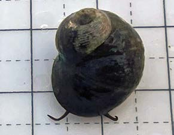
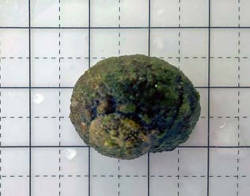
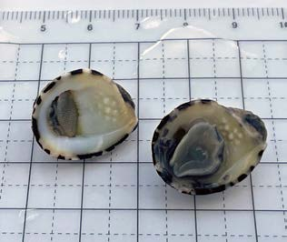
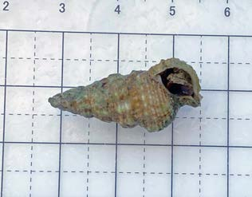
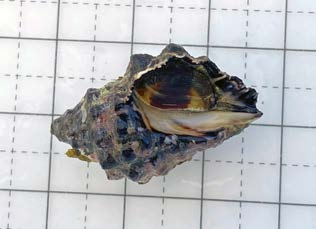
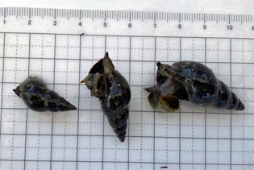
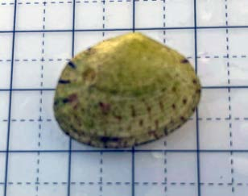
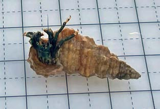
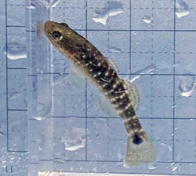
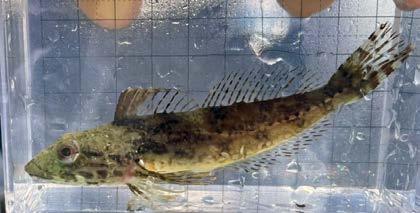